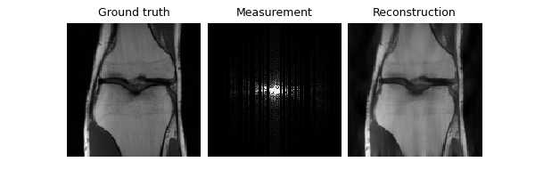
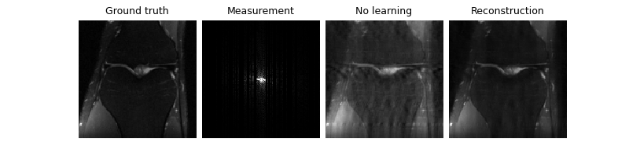

Note
Go to the end to download the full example code.
Self-supervised learning with Equivariant Imaging for MRI.
This example shows you how to train a reconstruction network for an MRI inverse problem on a fully self-supervised way, i.e., using measurement data only.
The equivariant imaging loss is presented in “Equivariant Imaging: Learning Beyond the Range Space”.
import deepinv as dinv
from torch.utils.data import DataLoader
import torch
from pathlib import Path
from torchvision import transforms
from deepinv.optim.prior import PnP
from deepinv.utils.demo import load_dataset, load_degradation
from deepinv.models.utils import get_weights_url
Setup paths for data loading and results.
BASE_DIR = Path(".")
ORIGINAL_DATA_DIR = BASE_DIR / "datasets"
DATA_DIR = BASE_DIR / "measurements"
CKPT_DIR = BASE_DIR / "ckpts"
# Set the global random seed from pytorch to ensure reproducibility of the example.
torch.manual_seed(0)
device = dinv.utils.get_freer_gpu() if torch.cuda.is_available() else "cpu"
Load base image datasets and degradation operators.
In this example, we use a subset of the single-coil FastMRI dataset as the base image dataset. It consists of 973 knee images of size 320x320.
Note
We reduce to the size to 128x128 for faster training in the demo.
operation = "MRI"
train_dataset_name = "fastmri_knee_singlecoil"
img_size = 128
transform = transforms.Compose([transforms.Resize(img_size)])
train_dataset = load_dataset(
train_dataset_name, ORIGINAL_DATA_DIR, transform, train=True
)
test_dataset = load_dataset(
train_dataset_name, ORIGINAL_DATA_DIR, transform, train=False
)
Downloading datasets/fastmri_knee_singlecoil.pt
0%| | 0.00/399M [00:00<?, ?iB/s]
0%| | 1.80M/399M [00:00<00:22, 17.9MiB/s]
1%| | 4.09M/399M [00:00<00:19, 20.8MiB/s]
2%|▏ | 7.03M/399M [00:00<00:15, 24.5MiB/s]
3%|▎ | 10.8M/399M [00:00<00:13, 29.5MiB/s]
4%|▍ | 15.5M/399M [00:00<00:10, 35.9MiB/s]
5%|▌ | 21.6M/399M [00:00<00:08, 44.3MiB/s]
7%|▋ | 28.4M/399M [00:00<00:07, 51.8MiB/s]
9%|▊ | 34.2M/399M [00:00<00:06, 53.9MiB/s]
10%|█ | 41.2M/399M [00:00<00:06, 59.0MiB/s]
12%|█▏ | 48.4M/399M [00:01<00:05, 62.8MiB/s]
14%|█▍ | 55.4M/399M [00:01<00:05, 65.2MiB/s]
16%|█▌ | 62.5M/399M [00:01<00:05, 67.0MiB/s]
17%|█▋ | 69.6M/399M [00:01<00:04, 68.2MiB/s]
19%|█▉ | 76.8M/399M [00:01<00:04, 69.2MiB/s]
21%|██ | 84.1M/399M [00:01<00:04, 70.3MiB/s]
23%|██▎ | 91.3M/399M [00:01<00:04, 70.8MiB/s]
25%|██▍ | 98.4M/399M [00:01<00:04, 71.0MiB/s]
26%|██▋ | 106M/399M [00:01<00:04, 71.0MiB/s]
28%|██▊ | 113M/399M [00:01<00:04, 70.3MiB/s]
30%|███ | 120M/399M [00:02<00:03, 70.7MiB/s]
32%|███▏ | 127M/399M [00:02<00:03, 70.9MiB/s]
34%|███▎ | 134M/399M [00:02<00:03, 71.3MiB/s]
35%|███▌ | 141M/399M [00:02<00:03, 71.6MiB/s]
37%|███▋ | 149M/399M [00:02<00:03, 71.7MiB/s]
39%|███▉ | 156M/399M [00:02<00:03, 71.8MiB/s]
41%|████ | 163M/399M [00:02<00:03, 71.8MiB/s]
43%|████▎ | 170M/399M [00:02<00:03, 72.0MiB/s]
45%|████▍ | 177M/399M [00:02<00:03, 72.0MiB/s]
46%|████▋ | 185M/399M [00:02<00:02, 72.0MiB/s]
48%|████▊ | 192M/399M [00:03<00:02, 70.8MiB/s]
50%|████▉ | 199M/399M [00:03<00:02, 71.6MiB/s]
52%|█████▏ | 207M/399M [00:03<00:02, 72.7MiB/s]
54%|█████▎ | 214M/399M [00:03<00:02, 73.1MiB/s]
56%|█████▌ | 222M/399M [00:03<00:02, 73.7MiB/s]
57%|█████▋ | 229M/399M [00:03<00:02, 73.9MiB/s]
59%|█████▉ | 237M/399M [00:03<00:02, 74.1MiB/s]
61%|██████ | 244M/399M [00:03<00:02, 72.6MiB/s]
63%|██████▎ | 251M/399M [00:03<00:02, 73.3MiB/s]
65%|██████▍ | 259M/399M [00:03<00:01, 73.8MiB/s]
67%|██████▋ | 266M/399M [00:04<00:01, 74.0MiB/s]
69%|██████▊ | 274M/399M [00:04<00:01, 64.7MiB/s]
71%|███████ | 281M/399M [00:04<00:01, 66.9MiB/s]
72%|███████▏ | 289M/399M [00:04<00:01, 68.9MiB/s]
74%|███████▍ | 296M/399M [00:04<00:01, 70.6MiB/s]
76%|███████▌ | 304M/399M [00:04<00:01, 72.0MiB/s]
78%|███████▊ | 311M/399M [00:04<00:01, 72.7MiB/s]
80%|███████▉ | 318M/399M [00:04<00:01, 73.3MiB/s]
82%|████████▏ | 326M/399M [00:04<00:01, 67.4MiB/s]
84%|████████▎ | 333M/399M [00:05<00:00, 69.1MiB/s]
85%|████████▌ | 341M/399M [00:05<00:00, 70.5MiB/s]
87%|████████▋ | 348M/399M [00:06<00:02, 19.0MiB/s]
89%|████████▊ | 353M/399M [00:06<00:02, 22.1MiB/s]
90%|█████████ | 360M/399M [00:06<00:01, 28.2MiB/s]
92%|█████████▏| 367M/399M [00:06<00:00, 35.0MiB/s]
94%|█████████▍| 375M/399M [00:06<00:00, 42.0MiB/s]
96%|█████████▌| 382M/399M [00:06<00:00, 48.6MiB/s]
98%|█████████▊| 390M/399M [00:06<00:00, 54.3MiB/s]
100%|█████████▉| 397M/399M [00:06<00:00, 59.2MiB/s]
100%|██████████| 399M/399M [00:06<00:00, 58.0MiB/s]
/home/runner/work/deepinv/deepinv/deepinv/utils/demo.py:20: FutureWarning: You are using `torch.load` with `weights_only=False` (the current default value), which uses the default pickle module implicitly. It is possible to construct malicious pickle data which will execute arbitrary code during unpickling (See https://github.com/pytorch/pytorch/blob/main/SECURITY.md#untrusted-models for more details). In a future release, the default value for `weights_only` will be flipped to `True`. This limits the functions that could be executed during unpickling. Arbitrary objects will no longer be allowed to be loaded via this mode unless they are explicitly allowlisted by the user via `torch.serialization.add_safe_globals`. We recommend you start setting `weights_only=True` for any use case where you don't have full control of the loaded file. Please open an issue on GitHub for any issues related to this experimental feature.
x = torch.load(str(root_dir) + ".pt")
Generate a dataset of knee images and load it.
mask = load_degradation("mri_mask_128x128.npy", ORIGINAL_DATA_DIR)
# defined physics
physics = dinv.physics.MRI(mask=mask, device=device)
# Use parallel dataloader if using a GPU to fasten training,
# otherwise, as all computes are on CPU, use synchronous data loading.
num_workers = 4 if torch.cuda.is_available() else 0
n_images_max = (
900 if torch.cuda.is_available() else 5
) # number of images used for training
# (the dataset has up to 973 images, however here we use only 900)
my_dataset_name = "demo_equivariant_imaging"
measurement_dir = DATA_DIR / train_dataset_name / operation
deepinv_datasets_path = dinv.datasets.generate_dataset(
train_dataset=train_dataset,
test_dataset=test_dataset,
physics=physics,
device=device,
save_dir=measurement_dir,
train_datapoints=n_images_max,
num_workers=num_workers,
dataset_filename=str(my_dataset_name),
)
train_dataset = dinv.datasets.HDF5Dataset(path=deepinv_datasets_path, train=True)
test_dataset = dinv.datasets.HDF5Dataset(path=deepinv_datasets_path, train=False)
mri_mask_128x128.npy degradation downloaded in datasets
Dataset has been saved in measurements/fastmri_knee_singlecoil/MRI
Set up the reconstruction network
As a reconstruction network, we use an unrolled network (half-quadratic splitting) with a trainable denoising prior based on the DnCNN architecture.
# Select the data fidelity term
data_fidelity = dinv.optim.L2()
n_channels = 2 # real + imaginary parts
# If the prior dict value is initialized with a table of length max_iter, then a distinct model is trained for each
# iteration. For fixed trained model prior across iterations, initialize with a single model.
prior = PnP(
denoiser=dinv.models.DnCNN(
in_channels=n_channels,
out_channels=n_channels,
pretrained=None,
depth=7,
).to(device)
)
# Unrolled optimization algorithm parameters
max_iter = 3 # number of unfolded layers
lamb = [1.0] * max_iter # initialization of the regularization parameter
stepsize = [1.0] * max_iter # initialization of the step sizes.
sigma_denoiser = [0.01] * max_iter # initialization of the denoiser parameters
params_algo = { # wrap all the restoration parameters in a 'params_algo' dictionary
"stepsize": stepsize,
"g_param": sigma_denoiser,
"lambda": lamb,
}
trainable_params = [
"lambda",
"stepsize",
"g_param",
] # define which parameters from 'params_algo' are trainable
# Define the unfolded trainable model.
model = dinv.unfolded.unfolded_builder(
"HQS",
params_algo=params_algo,
trainable_params=trainable_params,
data_fidelity=data_fidelity,
max_iter=max_iter,
prior=prior,
)
Set up the training parameters
We choose a self-supervised training scheme with two losses: the measurement consistency loss (MC) and the equivariant imaging loss (EI). The EI loss requires a group of transformations to be defined. The forward model should not be equivariant to these transformations. Here we use the group of 4 rotations of 90 degrees, as the accelerated MRI acquisition is not equivariant to rotations (while it is equivariant to translations).
Note
We use a pretrained model to reduce training time. You can get the same results by training from scratch for 150 epochs.
epochs = 1 # choose training epochs
learning_rate = 5e-4
batch_size = 16 if torch.cuda.is_available() else 1
# choose self-supervised training losses
# generates 4 random rotations per image in the batch
losses = [dinv.loss.MCLoss(), dinv.loss.EILoss(dinv.transform.Rotate(4))]
# choose optimizer and scheduler
optimizer = torch.optim.Adam(model.parameters(), lr=learning_rate, weight_decay=1e-8)
scheduler = torch.optim.lr_scheduler.StepLR(optimizer, step_size=int(epochs * 0.8) + 1)
# start with a pretrained model to reduce training time
file_name = "new_demo_ei_ckp_150_v3.pth"
url = get_weights_url(model_name="demo", file_name=file_name)
ckpt = torch.hub.load_state_dict_from_url(
url,
map_location=lambda storage, loc: storage,
file_name=file_name,
)
# load a checkpoint to reduce training time
model.load_state_dict(ckpt["state_dict"])
optimizer.load_state_dict(ckpt["optimizer"])
Downloading: "https://huggingface.co/deepinv/demo/resolve/main/new_demo_ei_ckp_150_v3.pth?download=true" to /home/runner/.cache/torch/hub/checkpoints/new_demo_ei_ckp_150_v3.pth
0%| | 0.00/2.17M [00:00<?, ?B/s]
100%|██████████| 2.17M/2.17M [00:00<00:00, 54.2MB/s]
Train the network
verbose = True # print training information
wandb_vis = False # plot curves and images in Weight&Bias
train_dataloader = DataLoader(
train_dataset, batch_size=batch_size, num_workers=num_workers, shuffle=True
)
test_dataloader = DataLoader(
test_dataset, batch_size=batch_size, num_workers=num_workers, shuffle=False
)
# Initialize the trainer
trainer = dinv.Trainer(
model,
physics=physics,
epochs=epochs,
scheduler=scheduler,
losses=losses,
optimizer=optimizer,
train_dataloader=train_dataloader,
plot_images=True,
device=device,
save_path=str(CKPT_DIR / operation),
verbose=verbose,
wandb_vis=wandb_vis,
show_progress_bar=False, # disable progress bar for better vis in sphinx gallery.
ckp_interval=10,
)
model = trainer.train()

The model has 187019 trainable parameters
Train epoch 0: MCLoss=0.0, EILoss=0.0, TotalLoss=0.0, PSNR=36.182
Test the network
trainer.test(test_dataloader)

The model has 187019 trainable parameters
Eval epoch 0: PSNR=35.264, PSNR no learning=29.389
Test results:
PSNR no learning: 29.389 +- 3.411
PSNR: 35.264 +- 2.623
{'PSNR no learning': 29.388799536718082, 'PSNR no learning_std': 3.4114185158882959, 'PSNR': 35.263515028235034, 'PSNR_std': 2.6233009603086459}
Total running time of the script: (0 minutes 20.472 seconds)